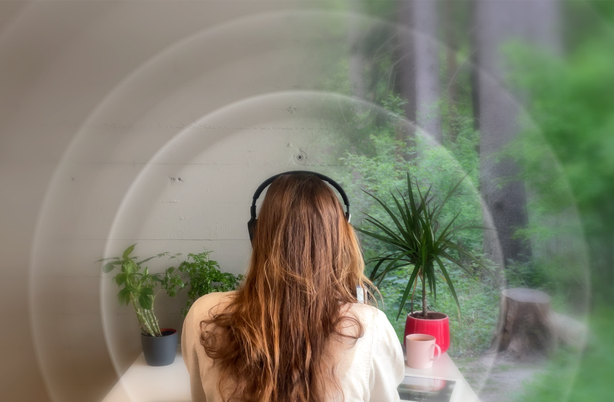

Home Office Sound Zone - The Restorative Potential of Spatial Soundscapes
The Home Office Sound Zone is a headphone-based spatial soundscape system designed to help young professional knowledge workers mentally separate work from home. My master thesis explored how spatial audio and nature-based soundscapes could support psychological detachment, recovery, and focus within the home office environment.
Read more